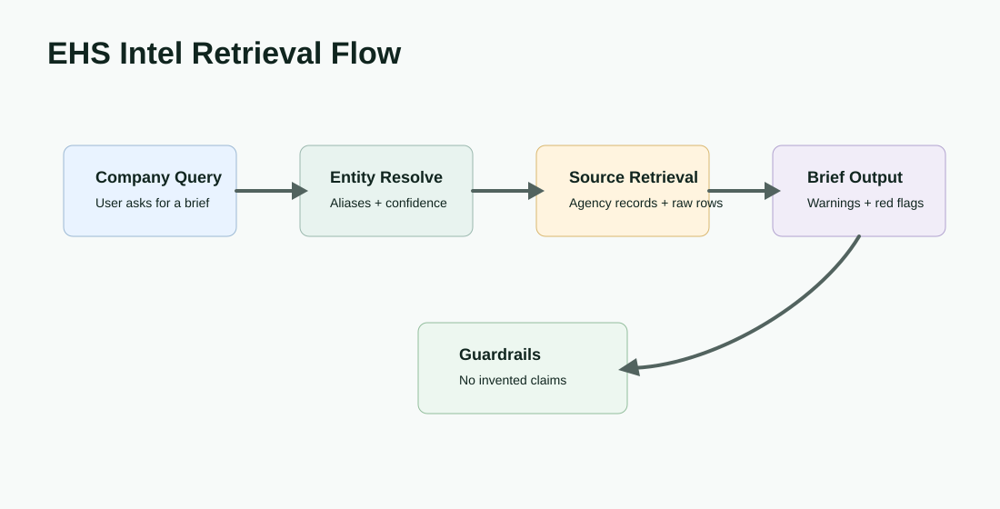
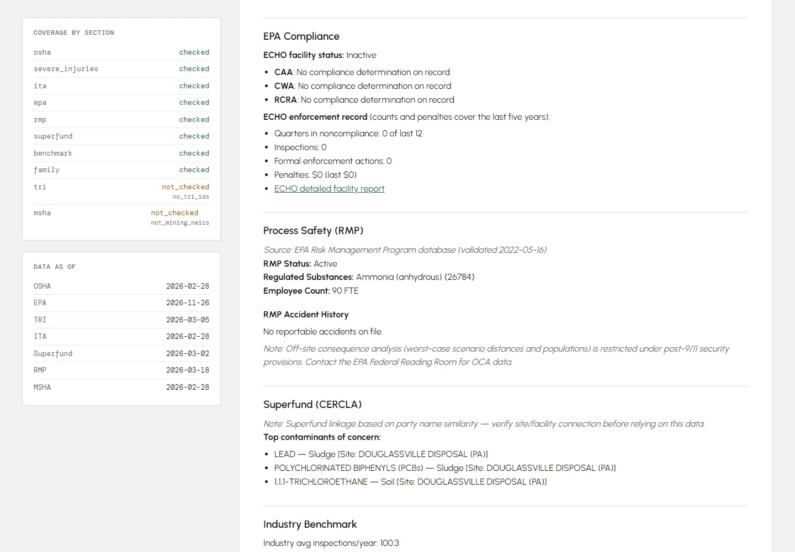

Problem
Before a deal, an insurance policy or a supplier contract, someone has to check a plant's safety and environmental record. That record is spread across OSHA, EPA, MSHA and other federal databases, each with its own IDs and name spellings. A chatbot with web search does not solve it. OSHA's own inspection pages block automated readers, so the chatbot falls back on press releases and guesses. Compliance answers need the record itself, plus an honest note where the record stops.
Solution
EHS Intel loads federal bulk data into PostgreSQL every night. That covers OSHA inspections, citations and severe injury reports, OSHA injury logs (ITA), MSHA mine records, EPA ECHO compliance, the EPA facility registry, toxic release reports (TRI), chemical risk plans (RMP) and Superfund. A read-only MCP server answers from that database with four tools. One matches a company name to its sites. One writes the brief for a site. One ranks the sites in a state or industry by a measure such as serious citations, and one lists every site a company runs. Matching and brief writing stay separate, so the match can be checked before anyone draws a conclusion.
Retrieval Flow

What A Brief Shows
Each section of a brief reports one of three states. It was checked, it was not checked (with a reason), or it failed. A failed or skipped section is never shown as a clean record. Each source also carries the date it was last loaded, so a reader knows how current the answer is. In the example below, TRI and MSHA were skipped because the site has no TRI filings and is not a mine.

Design Decisions
DB-First Answers
Compliance-facing responses are grounded in indexed database retrieval before any synthesis layer is allowed to summarize.
Inspectable Resolution
Entity matching is separated from brief generation so company resolution can be reviewed before conclusions are drawn.
Source Fidelity
Raw-row style fields and provenance details preserve the path back to source agency records.
Rules Travel With The Tools
The server's instructions and tool descriptions tell any client model how to report gaps and red flags. Unabated citations get fixed wording that a model may not soften.
Operations And Reliability
A timer starts the ingestion pipeline at 03:00 Eastern on a home server. Downloads are capped at 3 MB/s so they share the network politely. Each table loads into a staging copy and swaps in within one short transaction, so a reader never sees a half-loaded table, and every run is written to a ledger. The first full run, on a copy of the database, pulled 5.1 GB of OSHA and EPA registry files and finished in 74 minutes. When briefs slowed to 7.6 to 12.4 seconds after go-live, a query trace showed the name search could not use its index. The fix brought warm briefs back to about 1.2 to 1.4 seconds.
Running As An MCP Server
An earlier version had its own Next.js chat interface that streamed tool calls. On 2026-11-24 it was archived, along with the FastAPI endpoints and the server's own model calls. A brief is read inside an AI client anyway, so the tools now plug into that client directly. The change also cut a brief from about 90 KB to between 9 and 17 KB, which leaves the client model room to read all of it. The server runs for personal use on a private tailnet with no public address, and Claude Code and Codex connect to it. On 2026-11-25 the merged code passed 556 server tests and 25 database tests.
Measured Against Web Search
To learn whether the tool was worth calling, it was tested on 17 realistic questions, such as an underwriter checking a meat plant or a job seeker checking a store chain. Each answer was compared with what a capable model found with web search alone. In the first round web search won 13 of the 17. The audit traced the losses to specific faults. In one, the brief read citation severity from a column that was empty in almost every row, so willful and repeat red flags never fired. After two rounds of fixes, a strict rescoring by an independent model run gave EHS Intel 9 wins to web search's 6, with one tie and one question neither answered well. Web search still wins on events after the data was loaded, such as new citations and lawsuits. The brief tool now invites the client model to search for those and label them as outside the federal record.